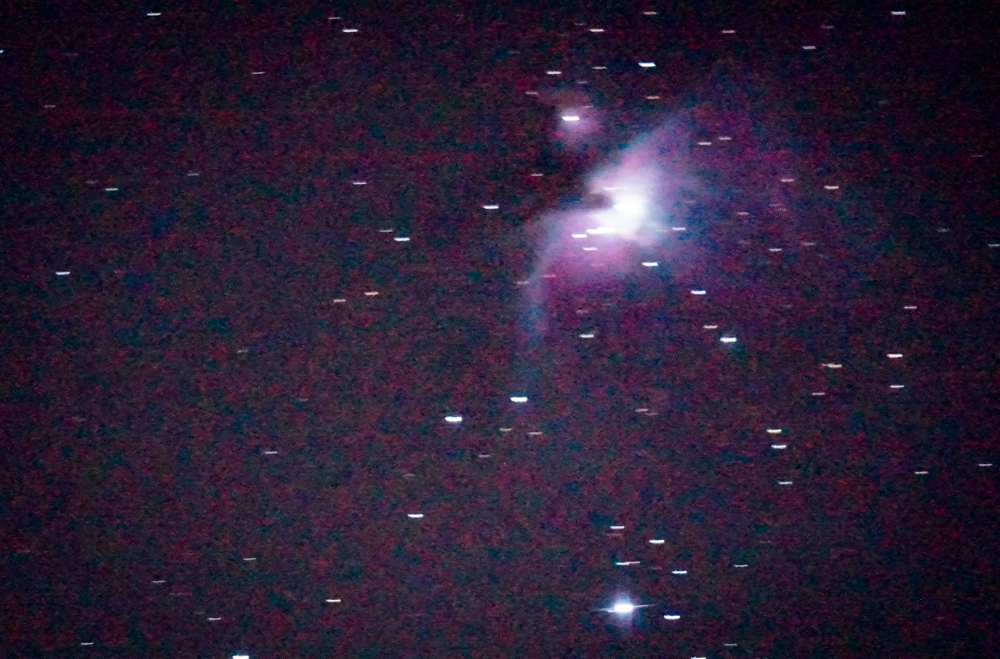
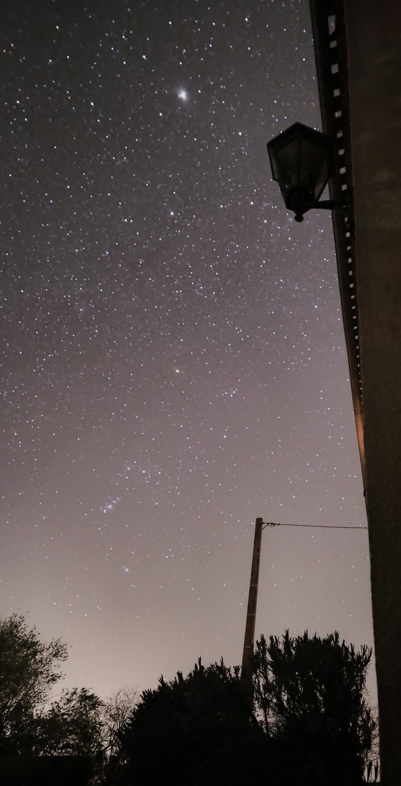
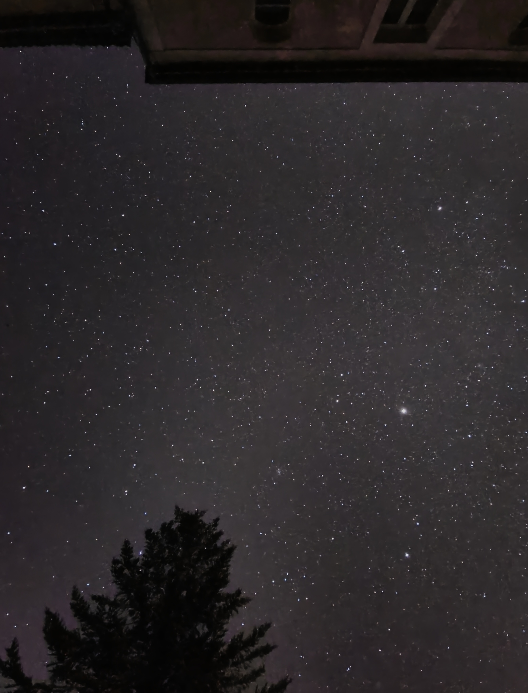
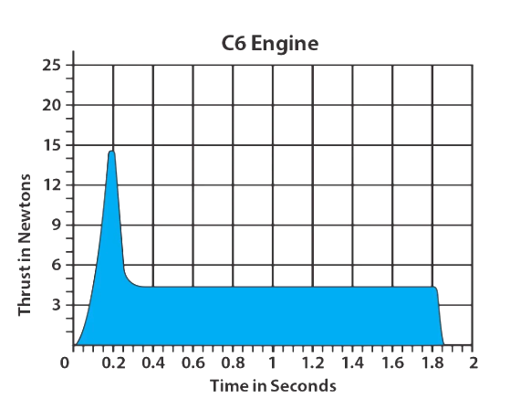
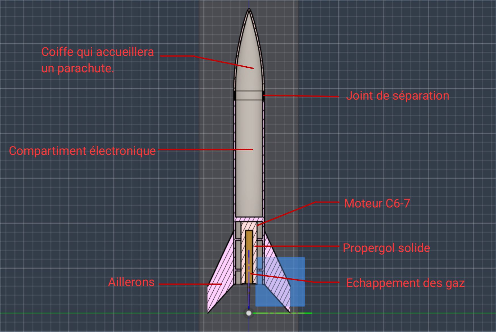
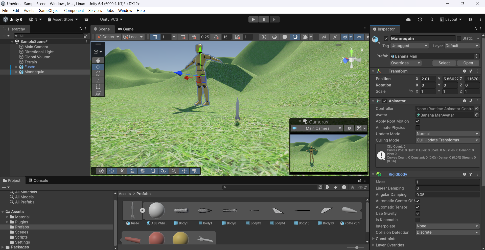
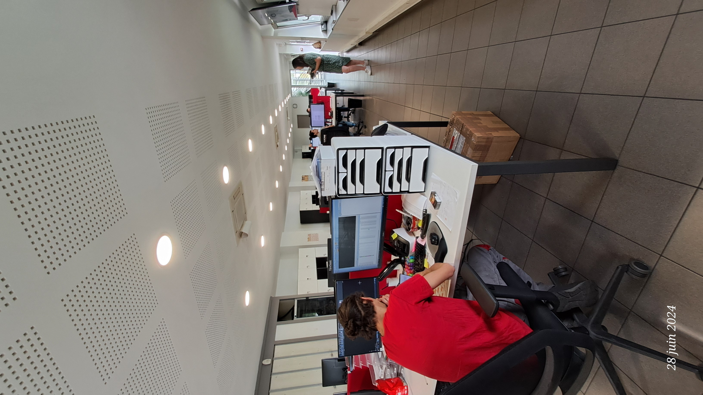
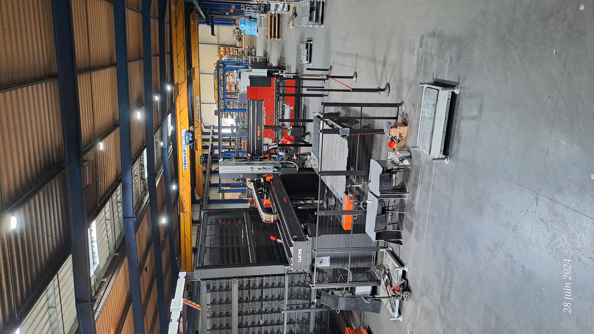

Astronomie & Astrophotographie
Passionné d'astronomie, je pratique l'observation et l'astrophotographie depuis plus de 5 ans et demi. Cette pratique m'a permis de développer une expertise particulière dans l'imagerie du ciel profond et l'observation des phénomènes célestes. Je combine à la fois l'observation visuelle pour explorer les merveilles du cosmos et la photographie astronomique pour capturer des images détaillées des objets du ciel profond, des nébuleuses aux galaxies lointaines.
Le matériel et l'atmosphère ne permettent pas toujours d'obtenir des clichés nets, ce qui rend chaque image unique. J'ai appris à traiter mes photos astro avec des logiciels spécialisés pour réduire le bruit et révéler les détails, notamment avec AutoStack et Lightroom.
Mes Observations
Voici quelques-unes de mes captures du ciel :







Projet Upérion - Modélisation de Mini-Fusée
Le projet Upérion est un projet personnel mêlant sciences physiques, ingénierie et programmation. J'ai conçu et modélisé une mini-fusée pour explorer mes passions scientifiques et techniques. L'objectif principal était de créer un modèle réaliste et fonctionnel, puis de simuler son vol pour prédire ses performances. Ce projet m'a permis de développer mes compétences en CAO, simulation physique, et programmation, en affrontant des défis techniques complexes et en apprenant de façon autonome.
Modélisation 3D
Conception de la fusée Upérion avec attention aux détails aérodynamiques et structurels. Utilisation du logiciel Fusion 360 pour créer un modèle fonctionnel et scalable. Plus tard j'ajouterai un système électronique afin de recueillir des données lors du lancement et commander l'éjection du parachute.
- Plastique ABS (standard pour impression 3D)
- 2 mm d'épaisseur
- Hauteur : 33.9 cm
- Diamètre (tube) : 3.4 cm
- Poids (avec moteur, sans équipements) : ~150 g
- Ajout d'un système électronique pour recueillir des données de vol
- Ajout de fixation pour le parachute et les composants électroniques
- Optimisation de la forme pour améliorer les performances aérodynamiques
- Type : Moteur à propergol solide ( C6-7)
- Durée de poussée: 1.6 s
- Poussée max: 15.3 N
- Poids: 24 g


Simulation Unity
Développement d'une simulation de lancement sur Unity pour tester les performances théoriques de la fusée. La simulation intègre la physique réaliste du vol et permet de visualiser la trajectoire et le comportement de la fusée.

Vidéo finale de la simulation
Stage en Entreprise - Lucas à Bazas
J'ai effectué mon stage au sein de l'entreprise Lucas à Bazas, spécialisée dans la conception et la fabrication d'axes linéaires et de robots cartésiens de grande taille pour l'automatisation industrielle. Cette expérience m'a permis de découvrir le monde industriel et de me projetter concretement dans le domaine de l'ingénierie mécanique.
Durant ce stage, j'ai utilisé des logiciels de CAO tels qu'AutoCAD et LibreCAD pour dessiner des pièces mécaniques et comprendre le fonctionnement des systèmes. J'ai également observé le processus complet de fabrication, de la conception à la réalisation.
J'ai particulièrement apprécié l'accompagnement des équipes, leur rigueur et l'ambition de certains. Cette immersion a renforcé mon intérêt pour les sciences de l'ingénieur et la conception technique.
- Logiciels : AutoCAD, LibreCAD
- Objectif :Observation de l'élaboration des systèmes et fabrication des machines industrielles
- Ce que j'ai fait :conception de pièces mécaniques, présentation de l'entreprise lors d'un salon


Atelier de fabrication et assemblage de structures mécaniques.

Machine d'usinage en phase de test, à laquelle j'ai suivi sa programmation.
Pièce de test
J'ai modélisé une pièce destinée à tester la charge que pouvaient porter des robots-bras. Cette pièce se fixe directement au robot et permet d'accueillir des poids interchangeables de différentes masses afin d'évaluer la performance et la tenue mécanique sous charge.
J'ai conçu la partie structurelle, en prévoyant des points de fixation robustes et un espace pour insérer des masses variées. L'objectif était d'obtenir une pièce modulable, simple à monter et suffisamment rigide pour des essais de charge répétés sur les axes linéaires industriels.
Ci-dessous, un espace prévu pour quelques images illustrant la conception mécanique et les points d'attache :
Visualisation de la pièce de test avec les points de fixation pour le robot.
Schéma de la structure montrant l'espace prévu pour les masses interchangeables.
Développement Web
Voici quelques-uns de mes projets web :
- La bêta 2 du site de Start & Scale : Site Start & Scale V2
- La bêta de la plateforme de Start & Scale : Plateforme Start & Scale
Ce site est une bêta non connectée à une base de données, donc toutes les informations de connexion sont simulées (non collectées).